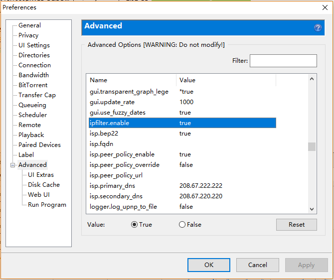
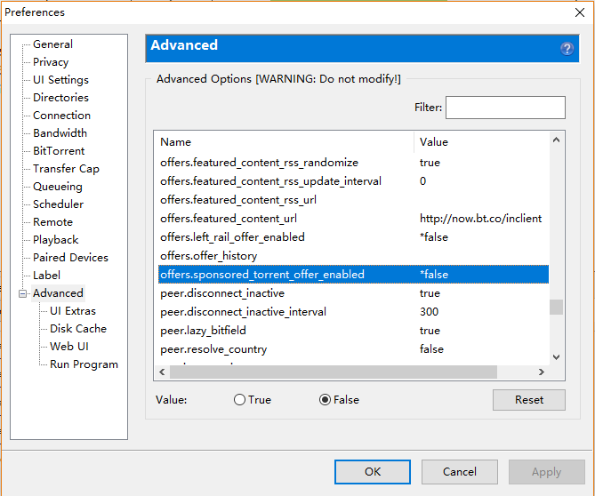
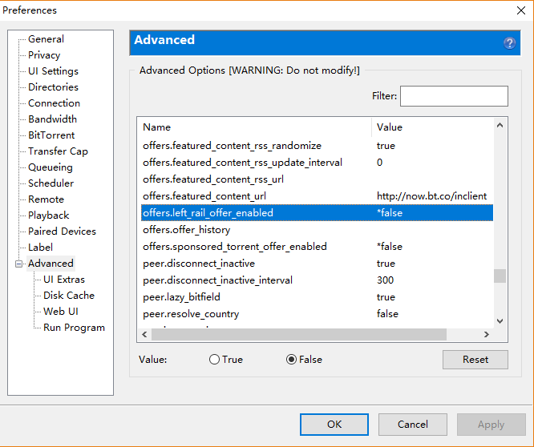
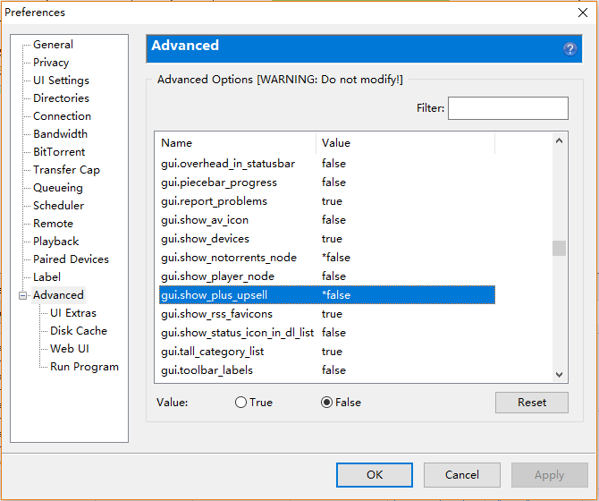

在 uTorrent 中设置 IP 过滤和去除广告
uTorrent 是广泛流行的非常好用的 BT 下载工具。我们可以设置 uTorrent 使其屏蔽某些 IP。 默认的 uTorrent 会有广告和升级提示。目前 (v.3.5.4) 还可以通过设置去掉。
目录
IP 地址过滤
比如我们要过滤掉 所有的 IPV4 地址，我们可以通过如下步骤进行。
- 打开 uTorrent 安装目录。一般在
%APPDATA%\uTorrent\目录。 - 打开或新建一个
ipfilter.dat文本文件。内容为
0.0.0.0-255.255.255.255
如果要过滤某一段， 可添加上 a.b.c.d-e.f.g.h 到该文件中。
3. 打开 uTorrent 选项 (Options) 的 首选项 (Preferences)，在高级 (Advanced) 中，设置 ipfilter.enable 为 true。

- 在种子的详细信息下面，日志中可以看到有
Loaded ipfilter.dat (1 entries)类似的信息，表明 IP 过滤已经启用了。
去除广告和升级提示
目前的 uTorrent 可以在设置中除去广告, 这篇 介绍了如何手动去除 uTorrent 中的广告。
- 屏蔽左下角广告。 在
Options->Preferences->Advanced里， 找到offers.left_rail_offer_enabled设置为false.

- 屏蔽顶部广告。 找到
offsers.sponsored_torrent_offer_enabled， 设置为false.

- 屏蔽左下角升级提示。 找到
gui.show_plus_upsell， 设置为false.

这样基本就没有烦人的广告和升级提示啦。